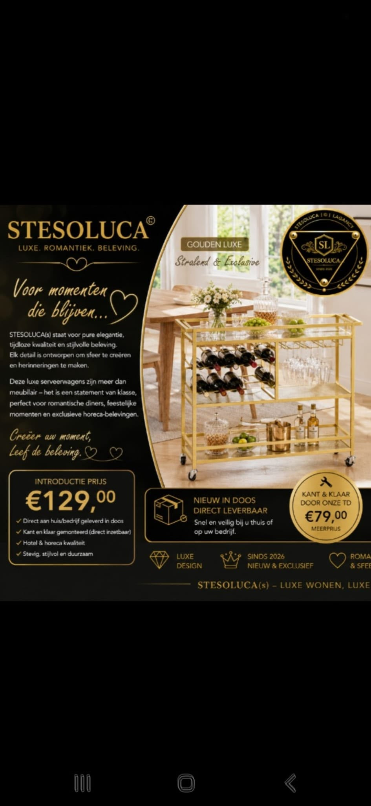

Light objects
Light objects03 · The Collection
Collected with
intention.
Een eerste glimp van objecten die niet alleen een ruimte vullen, maar haar ritme bepalen.
A considered selection
For the room
you remember.
Onze toekomstige collectie beweegt tussen het vertrouwde en het onverwachte. Gloed, glas, goudtinten en sculpturale vormen komen samen in een signatuur die niet schreeuwt, maar blijft.
Hier ziet u sfeerbeelden uit de richting van STESOLUCA — geen definitieve productpresentatie.

Light objects Entertaining
EntertainingThe Hosting Edit
 Occasion
OccasionThe Gathering Edit
A private reveal
The first pieces
arrive quietly.
Laat uw naam achter voor een persoonlijke uitnodiging wanneer de collectie verder wordt onthuld.
Request an invitation